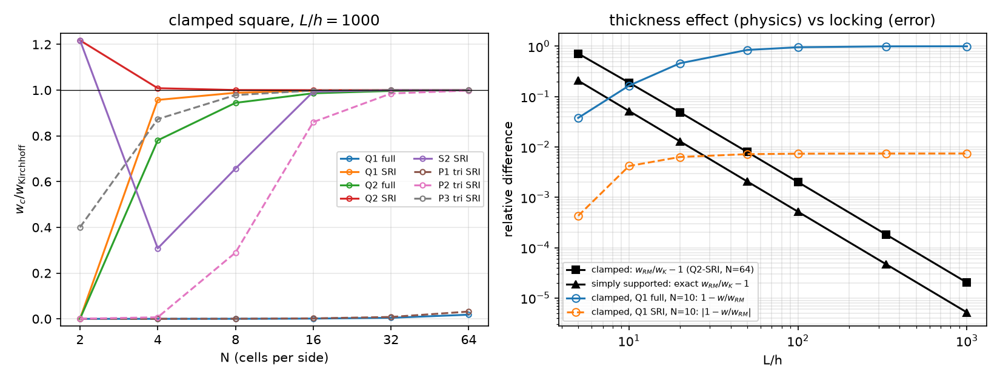

AI-based Materials and Process Simulation II
Week 08 — Midterm · Reissner–Mindlin Plates: Shear Locking, Reduced Integration, the Right Reference · Project Proposal
Process Systems Laboratory
Department of Chemical and Biomolecular Engineering, SeoulTech
Today
| Part | Topic | Time |
|---|---|---|
| Midterm exam (Weeks 1–7, concepts + code reading, closed-AI) | 90 min | |
| A | Reissner–Mindlin plates — kinematics, energy, the Kirchhoff limit | 15 min |
| B | Shear locking — counting constraints, reduced integration, quadrilaterals vs triangles | 20 min |
| C | References — Navier, the exact Reissner–Mindlin plate, thickness vs locking; the sources re-run | 15 min |
| D | LLM pitfalls · the project proposal | 10 min |
Lab notebook: W08_lab.ipynb (start in class, finish at home) · Project proposal: W08_project_proposal.ipynb (due before Week 9) · no homework this week
Part A · Reissner–Mindlin plates
From 3D to the mid-plane
Plate of thickness h on \Omega\subset\mathbb R^2; the normal stays straight but not normal (first-order shear deformation):
u_\alpha(x,y,z)=-z\,\theta_\alpha(x,y),\qquad u_z=w(x,y),\qquad \boldsymbol\chi=\operatorname{sym}\nabla\boldsymbol\theta,\qquad \boldsymbol\gamma=\nabla w-\boldsymbol\theta
\int_\Omega D\big[(1-\nu)\boldsymbol\chi(\boldsymbol\theta)+\nu\operatorname{tr}\boldsymbol\chi(\boldsymbol\theta)\mathbf I\big]:\boldsymbol\chi(\boldsymbol\psi)+F\,(\nabla w-\boldsymbol\theta)\cdot(\nabla v-\boldsymbol\psi)\,dA=\int_\Omega q\,v\,dA
D=\dfrac{Eh^3}{12(1-\nu^2)} (bending), F=\kappa Gh, \kappa=5/6 (shear). Mixed space (w,\boldsymbol\theta) — the Week 7 Timoshenko beam, one dimension up.
The Kirchhoff limit
\dfrac{F}{D}\sim\dfrac{1}{h^2}: as h/L\to0 the shear term becomes a penalty that enforces \boldsymbol\theta=\nabla w — the Kirchhoff (Love–Kirchhoff) plate, a 4th-order problem D\Delta^2w=q that needs C^1 elements. Reissner–Mindlin keeps C^0 elements and adds shear deformation.
| simply supported square | clamped square | |
|---|---|---|
| Kirchhoff | Navier series, w_c=0.00406235\,qa^4/D | w_c=0.00126532\,qa^4/D (tabulated) |
| Reissner–Mindlin | exact: w_{RM}=w_K+\mathcal M/F (hard support) | no closed form → converged FE |
| w_{RM}/w_K-1 at L/h = 10, 100, 1000 | 5.2 %, 0.052 %, 0.0005 % | 18.9 %, 0.20 %, 0.002 % |
\mathcal M=(M_{xx}+M_{yy})/(1+\nu) solves -\Delta\mathcal M=q, \mathcal M=0 on the edges (Marcus): a second Navier series. Hard support: w=0 and the tangential rotation =0; soft: w=0 only (boundary layer).
Part B · Shear locking
Counting constraints
In the thin limit \nabla w=\boldsymbol\theta is enforced at every quadrature point of the shear term — 2 constraints per point. If the discrete space cannot satisfy them all with a nonzero deflection, it locks: the shear energy, multiplied by F\propto h against D\propto h^3, freezes w.
| element (unknowns per cell: 3\times nodes per cell) | shear rule | constraints | ratio | clamped, N=10 / 50 |
|---|---|---|---|---|
| Q1 | full 2\times2 | 8 | 0.38 | 0.00046 / 0.011 |
| Q1 | one point | 2 | 1.5 | 0.9926 / 0.9997 |
| Q2 (9 nodes) | full 3\times3 | 18 | 0.67 | 0.9645 / 0.9987 |
| Q2 | 2\times2 | 8 | 1.5 | 1.0002 / 1.00002 |
| S2 (8 nodes) | 2\times2 | 8 | 1.1 | 0.877 / 1.00002 |
A heuristic (Hughes), not a theorem — but it predicts the table: ratio well above 1 → no locking.
Reduced integration: quadrilaterals yes, triangles no

Left: clamped square, L/h=1000, center deflection over Kirchhoff. P1 triangles with one shear point: ratio 1.5/2=0.75 — still locked (0.008 at N=32). P2-SRI recovers slowly, P3 works. Right: thickness effect (black, physics, \propto(h/L)^2) against locking (blue, error, \to1).
DOLFINx 0.11
c = msh.basix_cell()
V = fem.functionspace(msh, basix.ufl.mixed_element([basix.ufl.element("Q", c, deg), basix.ufl.element("Q", c, deg, shape=(2,))])) # "S": serendipity
(w, th), (v, ps) = ufl.TrialFunctions(V), ufl.TestFunctions(V)
dxs = ufl.Measure("dx", domain=msh, metadata={"quadrature_degree": 2 * deg - 2}) # SRI: the shear term only
a = ufl.inner(M(th), chi(ps)) * ufl.dx + F * ufl.dot(ufl.grad(w) - th, ufl.grad(v) - ps) * dxsquadrature_degree0 or 1 → one point on a quadrilateral; 2 → 2\times2. Only the shear term is reduced; bending stays fully integrated.- Serendipity DOFs are not all point values:
tabulate_dof_coordinates()fails (“does not have pointwise evaluation”); evaluate the deflection at a point (bb_tree→compute_colliding_cells→Function.eval). V.sub(i).collapse()returns(space, [map])— the map is a list of arrays in 0.11.
Part C · References and verification
Which reference?
At L/h=10 the source compared both elements with Kirchhoff:
| clamped, h=0.1, Q1, N=10 | over w_K | over w_{RM} (Q2-SRI, N=64) |
|---|---|---|
| SRI | 1.184 (“too large”) | 0.9958 |
| full integration | 0.993 (“looks right”) | 0.835 — 17 % locked |
The thick plate is 18.9 % more flexible than Kirchhoff: that is physics. Against the thin limit the locked element looked right and the correct one wrong. Compare with a reference of the same model; use a limit only where it applies.
Convergence against the exact Reissner–Mindlin plate
Simply supported (hard), h=0.01, center deflection against w_K+\mathcal M/F:
| N | 4 | 8 | 16 | 32 | 64 | rate |
|---|---|---|---|---|---|---|
| Q1-SRI | 2.3\times10^{-2} | 5.1\times10^{-3} | 1.3\times10^{-3} | 3.1\times10^{-4} | 7.8\times10^{-5} | 2 |
| Q2-SRI | 1.7\times10^{-3} | 9.7\times10^{-5} | 6.0\times10^{-6} | 3.7\times10^{-7} | 2.3\times10^{-8} | 4 |
Locking-free = uniform in h: Q1-SRI, N=20: 0.999428, 0.999194, 0.999192 of w_{RM} for h = 0.1, 0.01, 0.001. A locking element has an error that grows as h\to0 at fixed N.
The original sources, re-run on 0.11
- plates_ch01: the element table (Q1/S2/Q2, full/SRI, N = 10, 50) reproduced to every digit, e.g. Q2-SRI 1.00021 / 1.00002, S2-SRI 0.87658 / 1.00002, Q1 full 0.00046 / 0.01116. Its
max(abs(w.x.array))happens to be right for serendipity (the maximum sits on a vertex DOF) but is not a deflection in general. - intro_ch03: SRI at N=20, h=10^{-3}: 0.9984 of Kirchhoff — reproduced; with the exact constant 1.265319\times10^{-3} instead of the source’s 1.265\times10^{-3} it is 0.9982. Its thickness study (“Expected: SRI maintains accuracy for all t”) compares thick plates with Kirchhoff — at t=0.1 the “accurate” 0.993 is the locked element (previous slides).
- The 0.10 → 0.11 port needs no API change for plates;
LinearProblem(..., petsc_options_prefix=...)as in Week 1.
Part D · LLM pitfalls · the proposal
What goes wrong in plate codes
| Pitfall | Measured symptom (this week) |
|---|---|
| Equal-order P1/Q1 with the full rule | deflection 0.0005 of the true one at L/h=1000 |
| “Reduced integration” on triangles | P1-SRI 0.008 at N=32 — still locked |
| Thick plate checked against Kirchhoff | a 17 % locked element looks right, a correct one looks 18 % off |
| Only w=0 called “clamped” | a soft simply supported plate (≈ 4× the clamped deflection for a disk) |
max(abs(w.x.array)) with non-nodal DOFs |
not a deflection (serendipity, hierarchical, DG) |
tabulate_dof_coordinates() on serendipity |
RuntimeError — use point evaluation |
A straight-sided disk from Gmsh (setOrder(1)) |
area and boundary error that refinement in p cannot remove |
The project proposal
Due before Week 9 (5 %): one of the ten topics A–J in projects/index.html — taken from current research fields of chemical and biomolecular engineering — or your own problem, small enough to verify. At most three students per topic.
- Problem — equations, BCs, parameters with units, dimensionless numbers, quantities of interest.
- Model and weak form — spaces, reductions (2D, axisymmetric, plane strain, GPS), constitutive model and internal variables.
- Numerical plan — elements and why (locking!), solvers, stepping, cost on Colab.
- Verification plan — exact/manufactured solutions with predicted rates, benchmarks with sources, conservation,
-np 1vs-np 2. - Smoke test — one
%%fenicsx -np 2cell: DOFs and one checkable number. 6. LLM plan, risks, timeline (W15 progress talk, W16 report).
The worked example (reactor wall under pressure and heat, Lamé check to 5\times10^{-10}) is in the notebook.
Summary
| Concept | Key point | DOLFINx 0.11 |
|---|---|---|
| Reissner–Mindlin | (w,\boldsymbol\theta), C^0, shear stiffness F\propto h, bending D\propto h^3 | mixed_element([Q, Q vector]) |
| Locking | constraint ratio < 1 → frozen deflection | the full rule on the shear term |
| Cure | SRI on quadrilaterals (Q1: 1 point, Q2: 2\times2); not on triangles (use P3) | metadata={"quadrature_degree": 2*deg-2} |
| References | thick: RM (w_K+\mathcal M/F for hard SS); thin: Kirchhoff | navier_ss(D, F) |
| Verification | rates uniform in h; same model as the reference | point evaluation Function.eval |
Next week: shells and periodic homogenization (dolfinx_mpc) — and HW8.